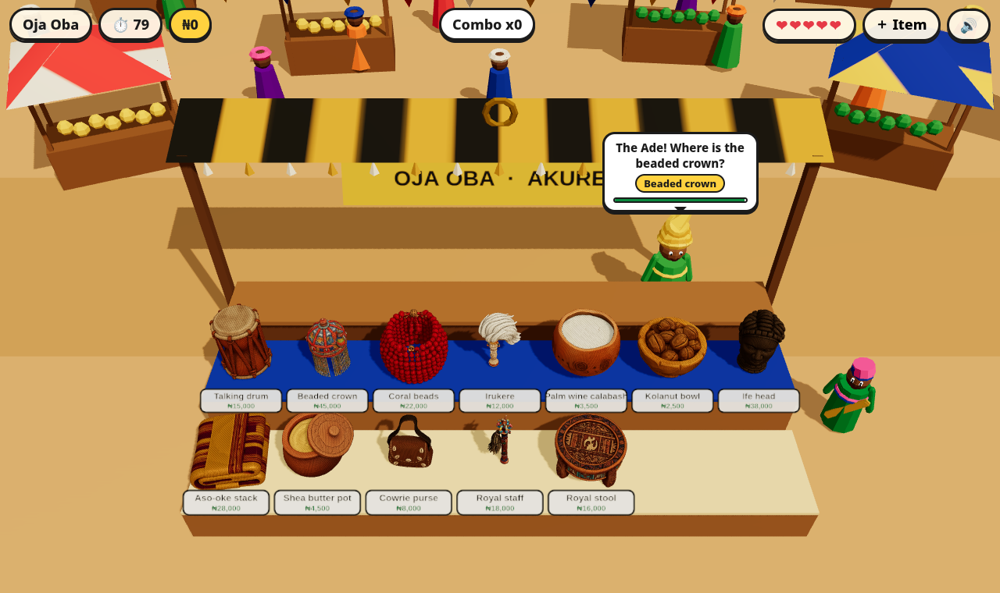
Nigerian markets are loud, fast and funny. In Naija Market Rush you run a stall and race to serve shouting customers before their patience runs out. The twist is the shelf: it is stocked with objects moulded by Aholo Lux3D, and a player can add another mid-shift by typing a prompt — or dropping in a photo — and waiting for a GLB to land on the table.
Judging weights this report keeps in view: Manycore tools 30% · Fun 25% · Innovation 20% · Completeness 20%. Deadline 19 November 2026. Every number below is taken from docs/lux3d_generation_log.json, the shipped code, or screenshots captured from a headless build of the game. No placeholder-era or import-test (Khronos duck) shots are used.
The hook is simple: you are the person behind the table. Customers arrive in a hurry and shout what they want, often in Nigerian Pidgin — “Abeg, bring me yam!”, “Jollof! Party jollof!”, “NEPA don go! Rechargeable lamp!” You tap the right object. It flies across the stall. Cash, a combo and sometimes a tip land in your hand. Get it wrong, or let someone wait too long, and they walk — and your reputation thins.
The cultural setting is not a generic bazaar. Level 1 is an everyday stall (Mama Jo Enterprises) with yam, agbada, gele, a pot of jollof, palm oil, Ankara, a torchlight phone, a kerosene lantern, a toy danfo. Level 2 is Oja Oba, the king’s market in Akure: talking drum, beaded ade crown, coral beads, irukere, palm wine in a calabash, kola, a replica Ife head, aso-oke, shea butter, a cowrie purse, a royal staff and a carved stool. Level 3 is a lantern-lit Night Market — puff-puff, akara, boli and corn, a coal brazier, pepper soup, zobo, groundnuts, a mosquito coil, a rechargeable lamp, agbo, a slightly spooky carved mask, an amulet pouch — with faster, less patient customers.
The game is aimed at casual players, at Nigerians at home and in the diaspora, and at anyone who has never stood in a West African market and wants a short, funny taste of that noise. The innovation is that the goods are not only hand-modelled props: they are generated with Lux3D, and the same pipeline is exposed inside the game so a player can stock something new during a shift.
A shift is a timed round (75 s on the stall, 80 s at Oja Oba, 70 s at night). Up to three customers occupy the counter. Each has a patience bar. Correct serves build a combo (a 10% price bump per step, capped); a quick serve can add a tip. A VIP — an Alhaji, a chief, a gele queen — pays double. In the closing seconds the market hits rush hour and people arrive faster. Lose five hearts (five vexed customers) and the shift ends early. Cash from a finished shift is banked in localStorage (nmr-save-v1) and used for upgrades and for unlocking later markets.
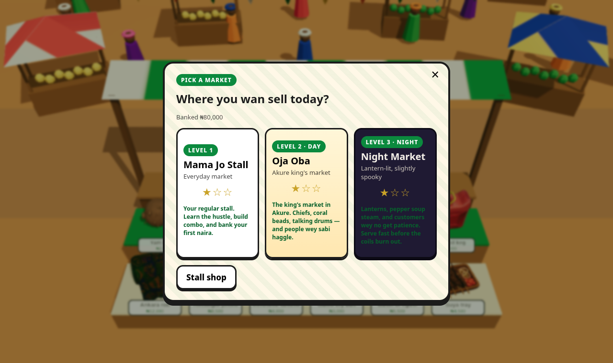
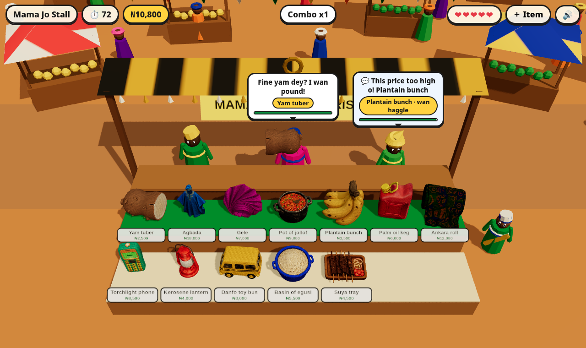
Some customers will not take the list price. Chance varies by market (22% on the stall, 34% at Oja Oba, 28% at night); VIPs do not haggle. When you serve one of them, a timing bar opens: a needle ping-pongs from cheap to “too costly”, mapping to 55%–140% of the listed price. Lock in the gold band (a fair-to-firm deal) and you earn a 15% bonus on top. Lock too high (past 86% of the bar) and they walk — no heart is lost, but the combo resets. A very cheap offer still sells, without a tip.
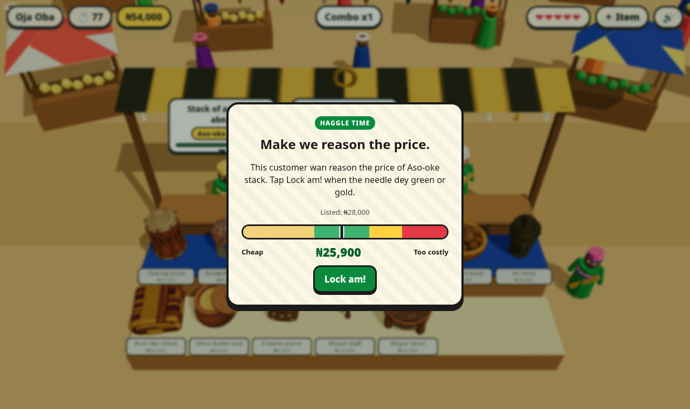
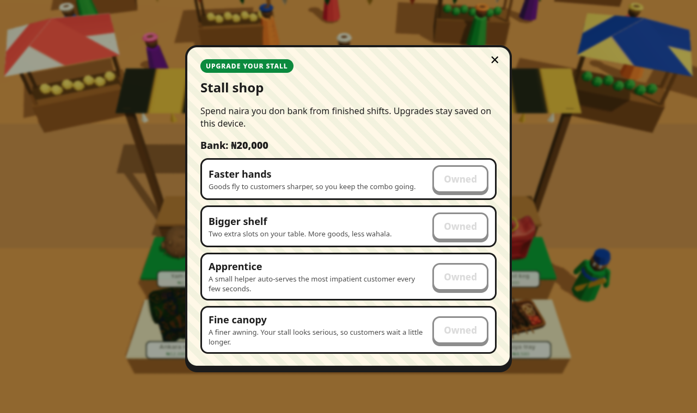
Banked naira buys four upgrades, saved in the same localStorage slot: Faster hands (₦8,000 — goods fly in 0.28 s instead of 0.45 s), Bigger shelf (₦15,000 — 14 slots instead of 12), Apprentice (₦25,000 — a helper auto-serves the most impatient non-haggling customer every 7 s), and Fine canopy (₦12,000 — a richer awning, and customers wait 18% longer).
The Night Market is a different mood: darker lighting, hanging lanterns, a moon, shorter patience and a tighter spawn interval (base 1.9 s, rush 0.95 s). Each market has its own customer types — mama / regular / alhaji on the stall; chief, gele queen, messenger at Oja Oba; okada rider, hawker, night owl after dark.
Sound is original procedural audio, generated at run time with the Web Audio API. There are no third-party samples in the project. Short synthesised tones cover serve, cash, tip, wrong item, arrival, anger, whoosh, VIP, haggle, shop purchase and a star fanfare. A light afrobeat-ish loop (kick, clap, shekere-like shaker, highlife-ish bass, kalimba-like lead) runs at 100 BPM in a two-bar pattern. A mute toggle silences both the loop and the SFX, and the choice is saved with the rest of the progress file. Sources and licence: docs/AUDIO_CREDITS.md (dedicated to the public domain, CC0 1.0).
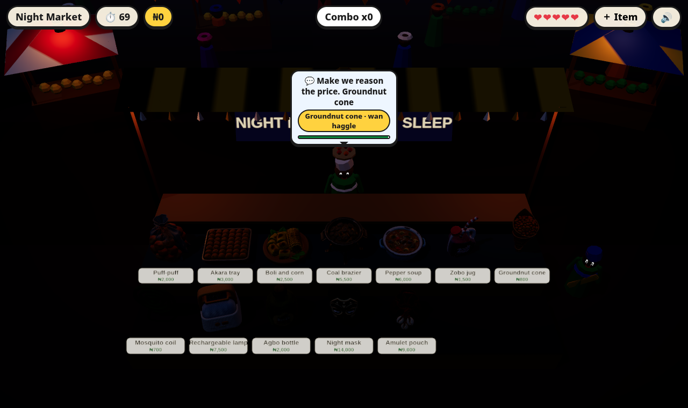
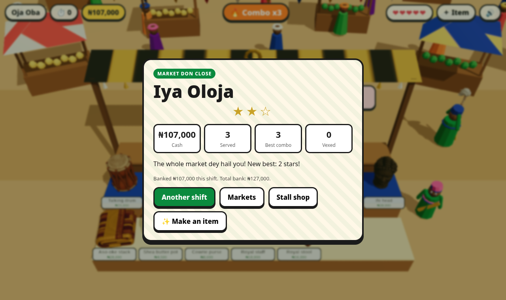
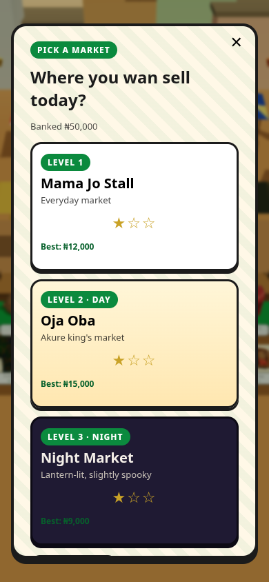
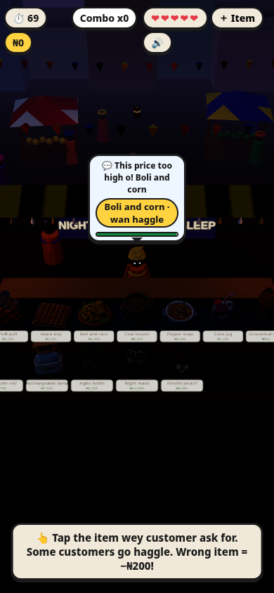
Lux3D is not a decoration around the game. It is how the goods exist. There are two complementary uses, both against the live Global API (region com), not a mock.
Every shelf item in all three markets — 12 + 12 + 12, 36 of 36 — is a real Aholo Lux3D text-to-3D GLB, generated with version G1-Turbo, style cartoon, target 30,000 faces, PBR on, output glb. Prompts are listed in docs/LUX3D_ASSETS.md and in the generation log. No catalog item is a procedural placeholder in the shipped build: the start screen reports “36 items across 3 markets: 36 Lux3D models, 0 placeholders.”
No Lux3D scenery or environment models were generated for this entry. Neighbour stalls, bunting, the palace silhouette at Oja Oba and the night lanterns are procedural Three.js meshes, with a loader ready to swap them for GLBs if they are added to the manifest later.
From the “Make an item” screen a player can type a prompt (text-to-3D) or optionally attach a photo (image-to-3D). server/app.py calls the official SDK, polls the task, downloads the GLB (output URLs expire in about two hours, so the file is cached) and returns it to the browser. The new item is normalised, dropped on the shelf, and sold at a 1.5× “fresh” premium. The same screen also accepts a GLB exported from the Lux3D web app, so a static host without the backend can still be stocked by hand. The public demo at https://naija-market-rush.vercel.app is that static case: it is a Vite build of web/ on Vercel, stocked with the 36 shipped GLBs. The FastAPI server and the AHOLO_API_KEY are not on that host (the key is never placed in the frontend or in the public deploy). When the backend is absent, the Generate control is hidden and the UI shows “Live generation available in local/server build.” Importing a GLB still works.
The live path was tested against the real API, not the mock. A Tomato basket was generated in-game from the prompt “a woven raffia basket full of red tomatoes, cartoon style, single game prop, clean shape, centered”, priced at ₦5,000, with the line “Abeg, bring tomato basket!”. Task 8012442 reached status 3 in 168.4 seconds (17 polls), used 13 credits, produced a 9,755,200-byte GLB, and loaded on the shelf. That is the only live in-game generation recorded in the log. Image-to-3D is implemented in the backend and the UI, but it has not been verified with a live photo in this report, and is not claimed as a completed live test.
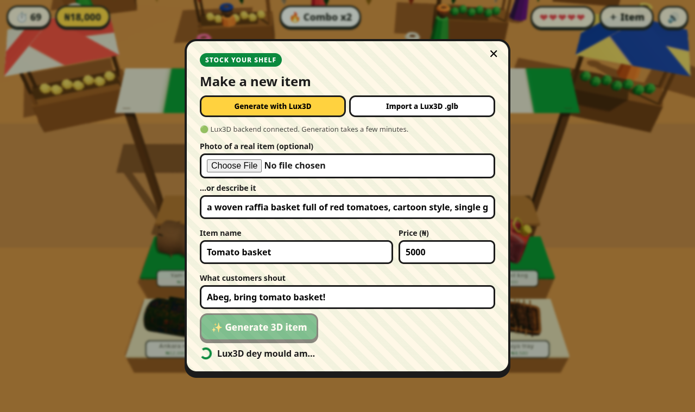
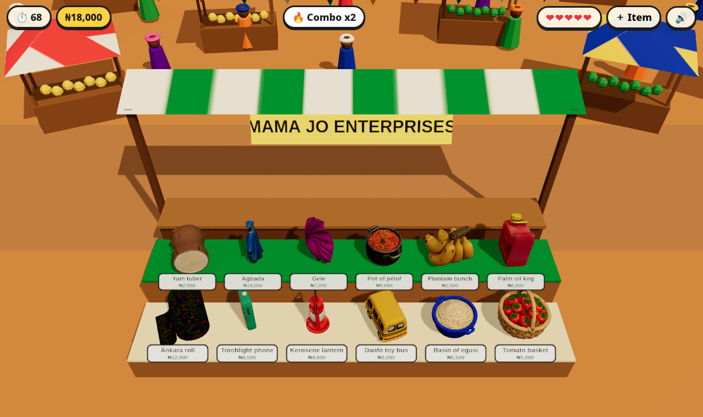
Catalog generation used POST https://api.aholo.ai/global/lux3d/v1/generate/text-to-3d/task/create, then GET …/generate/task/get?taskid= until status=3. The header is Authorization: <key> (no Bearer). Calls go through the official package manycore-aholo-sdk-lux3d, region com. Raw GLBs were compressed with gltf-transform 4.5.1 optimize --compress draco --texture-compress webp --texture-size 1024. The game already ships a Draco decoder and Three.js loads WebP textures, so the compressed files are what the player downloads. Each mesh is auto-scaled and seated on the table by a normalize() helper, so a model that arrives large or off-centre still sits correctly on a slot.
The contact sheets below were rendered in a headless Chrome / Three.js studio from the same compressed GLBs the game ships — not from screenshots of placeholders, and not from the Lux3D website. Every tile is one catalog item. Inputs were text prompts (no source photographs were used for the catalog). Each item was generated once at G1-Turbo; there was no second stylistic pass. Three tasks (coral beads, Ife head, aso-oke) completed after a local poll timed out or a generator process was interrupted; they were downloaded by the original task id and were not billed a second time.
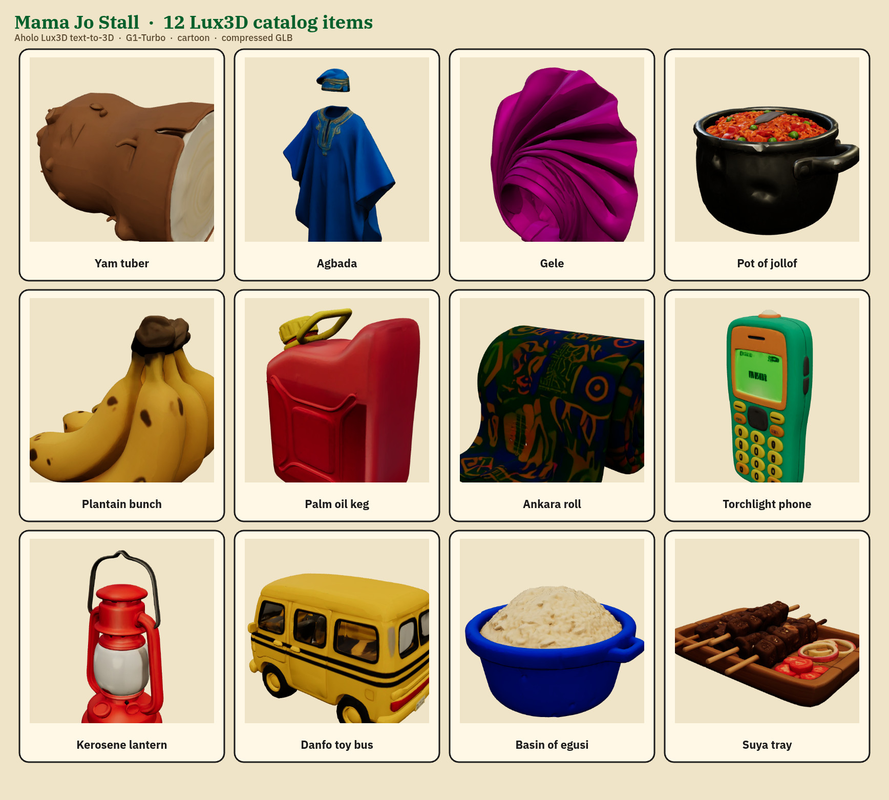
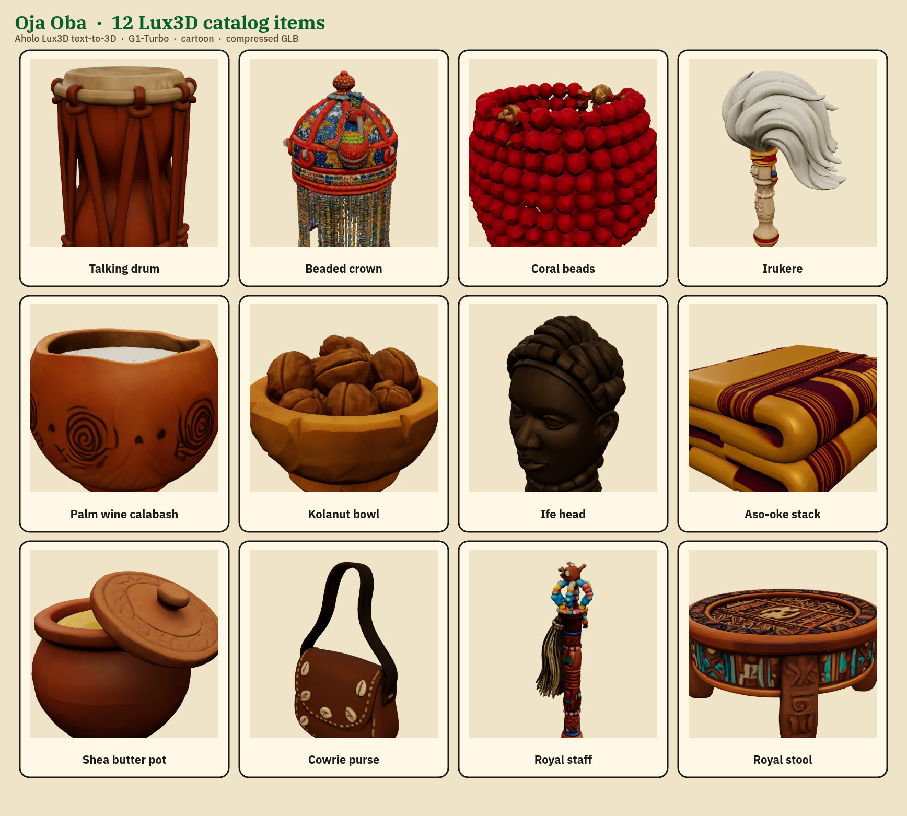
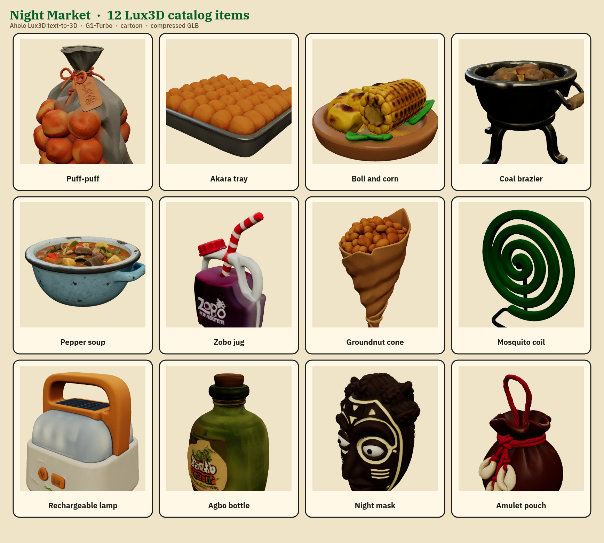
The prompts below are the exact strings sent to Lux3D (a shared suffix, “Single object, game prop, clean shape, centered,” is appended in the log). Sizes are raw download versus the compressed file in web/public/assets/models/. Each of these cost 13 credits.
| Item | Prompt (abridged) | Task | Time | Raw → compressed |
|---|---|---|---|---|
| Yam tuber | A single large West African yam tuber, rough brown bark-like skin, one end cut showing white flesh, game prop. | 8011611 | 115.7 s | 6.85 MB → 205 KB |
| Agbada | A flowing Nigerian agbada robe in royal blue with gold embroidery around the neck, displayed on an invisible mannequin, with matching fila cap. | 8011794 | 126.8 s | 8.95 MB → 358 KB |
| Pot of jollof | A dented aluminium cooking pot full of smoky orange Nigerian jollof rice with a few green peas and a bay leaf, two side handles. | 8011910 | 125.6 s | 10.65 MB → 500 KB |
| Beaded crown | A Yoruba royal ade crown covered in colourful coral and glass beads with a beaded face veil, cartoon game prop. | 8013965 | 505.4 s | 11.83 MB → 637 KB |
| Ife head | A bronze Ife head sculpture replica, serene face with delicate scarification, metallic brown, cartoon game prop. | 8014317 | 671.0 s | 8.58 MB → 306 KB |
| Night mask | A slightly spooky carved wooden Yoruba-style face mask, dark wood with white painted eyes, standalone, cartoon game prop. | 8015762 | 146.1 s | 8.93 MB → 290 KB |
Table 1. Six representative catalog items. Full prompts, timestamps and byte counts for all 36 items are in Table 3 and in docs/lux3d_generation_log.json. MB = 106 bytes, KB = 103 bytes, rounded.
| Batch | Items | Credits | Time (min / median / max) | Raw | Compressed |
|---|---|---|---|---|---|
| Round 1 — Mama Jo Stall | 12 / 12 | 156 | 108.6 / 127.9 / 357.0 s | 99.35 MB | 4.00 MB |
| Round 2 — Oja Oba + Night Market | 24 / 24 | 312 | 116.2 / 165.6 / 733.0 s | 214.17 MB | 8.75 MB |
| Catalog total | 36 / 36 | 468 | 108.6 / 147.4 / 733.0 s | 313.51 MB | 12.75 MB |
| In-game Tomato basket (task 8012442) | 1 / 1 | 13 | 168.4 s (17 polls) | 9.76 MB | not compressed* |
| Grand total | 37 | 481 | mean catalog time 230.0 s | 323.27 MB† | 12.75 MB catalog |
Table 2. Credit and size summary, from docs/lux3d_generation_log.json. Times are wall-clock from create (or, for three salvaged Round-2 tasks, API lastModified − created). *The in-game basket was served from the API cache and was not put through the catalog gltf-transform pass. †Raw catalog + in-game bytes.
The shortest catalog generation was the kerosene lantern (108.6 s). The longest was coral beads (733.0 s), which finished after a 600 s local poll had already given up; the file was then downloaded by task id 8013966. Across the catalog, compression took 313,514,600 bytes of raw GLB (mostly uncompressed PNG textures) down to 12,751,432 bytes — 4.1% of the original — which is what makes three markets feasible to ship in a browser download of about 12.8 MB of models.
All of the work described here was done on 15 November 2026 (Africa/Lagos, WAT, UTC+1). The process was: a playable Three.js loop with procedural placeholder meshes and the Lux3D pipeline already wired; then a first catalog of 12 real models and a live in-game generation; then an expansion to three markets, haggling, a stall shop, music, and 24 further models. Placeholder-era screenshots exist in the repo for the record but are not used in this report.
Principal tools, and what they were used for (hackathon rule II.2):
The author’s own playtest of the first stall is what led to the same-day expansion (the two new markets, haggling, the shop, and music). No external playtest scores or third-party quotes are claimed here.
Game, catalog prompts, report and procedural audio: Joseph Bassey John. 3D catalog and the live Tomato basket: Aholo Lux3D (G1-Turbo, cartoon). Engine and tooling as listed in section 7. Audio: original work, CC0 1.0 — see docs/AUDIO_CREDITS.md. This report is set in IBM Plex (SIL Open Font License). Third-party engine and library licences remain with their authors (Three.js, Vite, FastAPI, Playwright, gltf-transform, Gradio).
Links: the public demo, gameplay video, GitHub repository and X post submission are all filled in and verified on the title page.
Source: docs/lux3d_generation_log.json. Status 3 / success for every row. Credits 13 each. Compression: gltf-transform 4.5.1, Draco + WebP 1024. Times in seconds.
| Level | Item | Task id | Time (s) | Raw bytes | Compressed | Credits |
|---|---|---|---|---|---|---|
| Stall | Yam tuber | 8011611 | 115.7 | 6,845,120 | 204,508 | 13 |
| Stall | Agbada | 8011794 | 126.8 | 8,954,092 | 357,744 | 13 |
| Stall | Gele | 8011797 | 127.9 | 9,021,460 | 397,528 | 13 |
| Stall | Pot of jollof | 8011910 | 125.6 | 10,647,600 | 500,148 | 13 |
| Stall | Plantain bunch | 8011916 | 143.3 | 7,811,840 | 262,408 | 13 |
| Stall | Palm oil keg | 8012028 | 143.7 | 7,343,368 | 290,428 | 13 |
| Stall | Ankara roll | 8012041 | 161.8 | 9,691,860 | 319,736 | 13 |
| Stall | Torchlight phone | 8012110 | 204.9 | 6,640,052 | 257,732 | 13 |
| Stall | Kerosene lantern | 8012125 | 108.6 | 8,073,224 | 328,868 | 13 |
| Stall | Danfo toy bus | 8012177 | 357.0 | 8,302,172 | 400,444 | 13 |
| Stall | Basin of egusi | 8012199 | 114.6 | 8,093,932 | 334,716 | 13 |
| Stall | Suya tray | 8012263 | 127.9 | 7,921,712 | 350,200 | 13 |
| Oja Oba | Talking drum | 8013931 | 127.4 | 7,796,220 | 323,916 | 13 |
| Oja Oba | Beaded crown | 8013965 | 505.4 | 11,828,180 | 636,880 | 13 |
| Oja Oba | Coral beads | 8013966 | 733.0 | 10,565,900 | 372,092 | 13 |
| Oja Oba | Irukere | 8014080 | 669.2 | 8,614,684 | 390,824 | 13 |
| Oja Oba | Palm wine calabash | 8014109 | 240.9 | 7,490,428 | 255,204 | 13 |
| Oja Oba | Kolanut bowl | 8014171 | 497.9 | 7,863,652 | 319,632 | 13 |
| Level | Item | Task id | Time (s) | Raw bytes | Compressed | Credits |
|---|---|---|---|---|---|---|
| Oja Oba | Ife head | 8014317 | 671.0 | 8,575,360 | 305,796 | 13 |
| Oja Oba | Aso-oke stack | 8014438 | 212.0 | 9,604,044 | 351,248 | 13 |
| Oja Oba | Shea butter pot | 8014974 | 117.9 | 8,766,892 | 322,868 | 13 |
| Oja Oba | Cowrie purse | 8014975 | 116.2 | 8,007,860 | 286,760 | 13 |
| Oja Oba | Royal staff | 8015073 | 120.1 | 9,855,968 | 515,264 | 13 |
| Oja Oba | Royal stool | 8015076 | 204.8 | 9,977,844 | 509,424 | 13 |
| Night Market | Puff-puff | 8015126 | 163.1 | 8,236,988 | 331,896 | 13 |
| Night Market | Akara tray | 8015158 | 124.8 | 10,549,988 | 380,556 | 13 |
| Night Market | Boli and corn | 8015183 | 137.7 | 9,711,988 | 369,644 | 13 |
| Night Market | Coal brazier | 8015243 | 168.1 | 12,151,196 | 493,376 | 13 |
| Night Market | Pepper soup | 8015306 | 140.2 | 8,518,184 | 376,408 | 13 |
| Night Market | Zobo jug | 8015326 | 175.6 | 7,987,588 | 317,336 | 13 |
| Night Market | Groundnut cone | 8015350 | 401.0 | 8,993,008 | 331,104 | 13 |
| Night Market | Mosquito coil | 8015430 | 317.8 | 7,094,696 | 230,612 | 13 |
| Night Market | Rechargeable lamp | 8015652 | 148.8 | 6,856,164 | 259,680 | 13 |
| Night Market | Agbo bottle | 8015692 | 129.4 | 7,488,356 | 445,020 | 13 |
| Night Market | Night mask | 8015762 | 146.1 | 8,928,188 | 290,436 | 13 |
| Night Market | Amulet pouch | 8015771 | 152.3 | 8,704,792 | 330,996 | 13 |
Table 3. Complete catalog log. Coral beads, Ife head and aso-oke were salvaged by task id after a timeout or an interrupted poll; credits and task ids are the original ones.